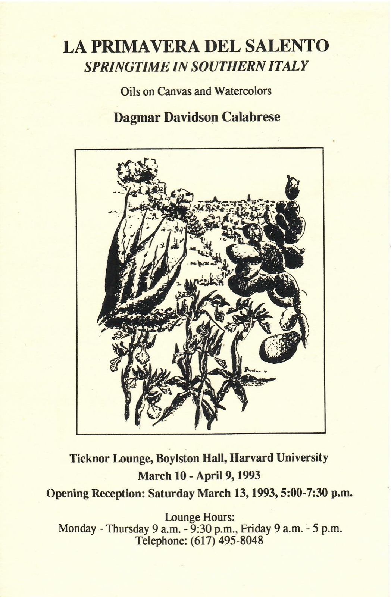
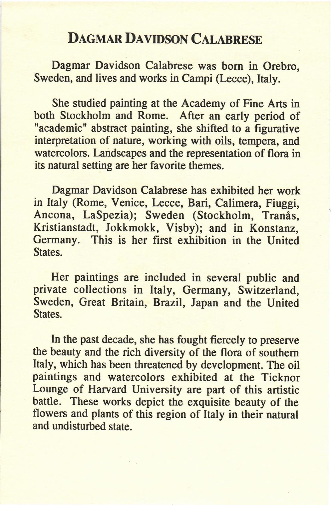

Ticknor 1993
- Categoria
- Mostre e registro delle opere
- Fogli
- 2
- Tag
- Mostra - Harvard 1993
Foglio 1 di 2 · Fronte

[fronte] LA PRIMAVERA DEL SALENTO SPRINGTIME IN SOUTHERN ITALY Oils on Canvas and Watercolors Dagmar Davidson Calabrese Ticknor Lounge, Boylston Hall, Harvard University March 10 - April 9, 1993 Opening Reception: Saturday March 13, 1993, 5:00-7:30 p.m. Lounge Hours: Monday - Thursday 9 a.m. - 9:30 p.m., Friday 9 a.m. - 5 p.m. Telephone: (617) 495-8048
Foglio 2 di 2 · Retro

[retro] DAGMAR DAVIDSON CALABRESE Dagmar Davidson Calabrese was born in Orebro, Sweden, and lives and works in Campi (Lecce), Italy. She studied painting at the Academy of Fine Arts in both Stockholm and Rome. After an early period of "academic" abstract painting, she shifted to a figurative interpretation of nature, working with oils, tempera, and watercolors. Landscapes and the representation of flora in its natural setting are her favorite themes. Dagmar Davidson Calabrese has exhibited her work in Italy (Rome, Venice, Lecce, Bari, Calimera, Fiuggi, Ancona, LaSpezia); Sweden (Stockholm, Tranås, Kristianstadt, Jokkmokk, Visby); and in Konstanz, Germany. This is her first exhibition in the United States. Her paintings are included in several public and private collections in Italy, Germany, Switzerland, Sweden, Great Britain, Brazil, Japan and the United States. In the past decade, she has fought fiercely to preserve the beauty and the rich diversity of the flora of southern Italy, which has been threatened by development. The oil paintings and watercolors exhibited at the Ticknor Lounge of Harvard University are part of this artistic battle. These works depict the exquisite beauty of the flowers and plants of this region of Italy in their natural and undisturbed state.
Documentazione digitale
Documentazione e codifica dell'ITEM: